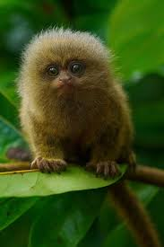
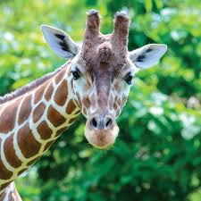

My name is Blon. Currently, I am 20 years old pursuing an undergraduate degree in Computer Science.
My school has really good dining facility and my 4 most favorite food from the canteen are:
- Hainanese Chicken Rice
- Fish and Chips
- Nasi Lamak
- Chicken Alfredo
Although some people may find it weird, I am obsessed with the edited picture of shrek on the internet. I will attached one below.

There is a picture of small monkey which I find really lovely.

The last picture is my most favorite animal in the whole world: Giraffe

Last night, My favorite youtuber Voidzilla posted a new video. I thought I would like to share it with you guys.
Favorite Youtube VideoThis is pretty much done for my self-introduction. Thank you and I am delighted to get to know you as well.